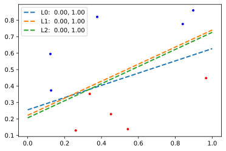
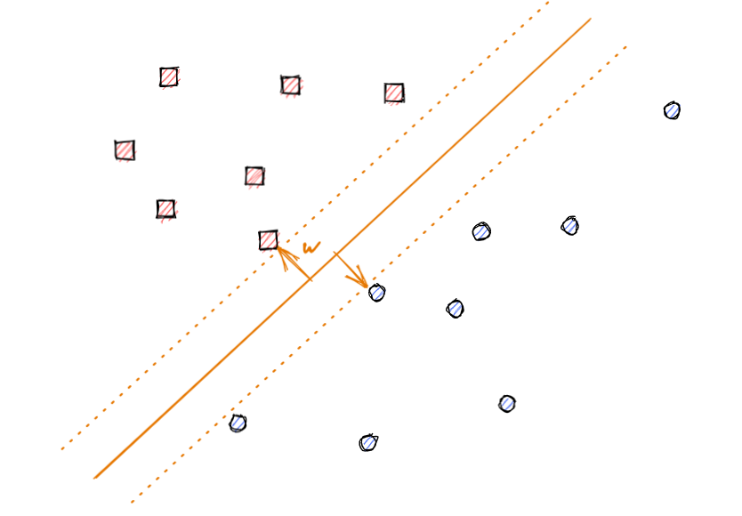
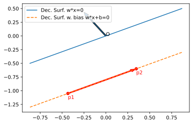

Machine Learning - Support Vector Machines
Jacky Baltes
National Taiwan Normal University
Taipei, Taiwan
jacky.baltes@ntnu.edu.tw

from functools import partial
import numpy as np
import matplotlib.pyplot as plt
from sklearn.model_selection import train_test_split
from sklearn.svm import SVC
import math
import random
np.random.seed(123456)
random.seed(123456)
N = 10
pts = np.random.random( ( 2, N ) )
fig = plt.figure()
ax = fig.add_subplot(1,1,1)
ax.plot( pts[0,:], pts[1,:], '.', color='blue')
# y = ax + b
line = ( 0.5, 0.3 )
plt.close()
fig = plt.figure()
ax = fig.add_subplot(1,1,1)
ax.plot( pts[0,:], pts[1,:], '.', color='blue')
# y = ax + b
line = ( 0.5, 0.25 )
def calcLine( line, x ):
slope, intercept = line
y = slope * x + intercept
return y
linePts = np.zeros( ( 2, 2 ) )
for i,x in enumerate([ 0.0, 1.0 ]):
linePts[0,i] = x
linePts[1,i] = calcLine( line, x )
ax.plot( linePts[0,:], linePts[1,:], '--', color='gray', linewidth=2.0 )
plt.close()
fig = plt.figure()
ax = fig.add_subplot(1,1,1)
# y = ax + b
line = ( 0.5, 0.25 )
def calcLine( line, x ):
slope, intercept = line
y = slope * x + intercept
return y
linePts = np.zeros( ( 2, 2 ) )
for i,x in enumerate([ 0.0, 1.0 ]):
linePts[0,i] = x
linePts[1,i] = calcLine( line, x )
# ax.plot( linePts[0,:], linePts[1,:], '--', color='gray', linewidth=2.0 )
w = [ -line[0], 1 ]
pos = []
neg = []
for i,p in enumerate( pts.T ):
wp = p.dot( w )
if wp >= line[1]:
pos = pos + [ p ]
else:
neg = neg + [ p ]
pos = np.array( pos ).T
neg = np.array( neg ).T
ax.plot( pos[0,:], pos[1,:], '.', color='blue' )
ax.plot( neg[0,:], neg[1,:], '.', color='red' )
d1 = addJBFigure("d1", 0, 0, fig )
plt.close()
Sample Domain

fig = plt.figure()
ax = fig.add_subplot(1,1,1)
# y = ax + b
line = ( 0.5, 0.25 )
alines = []
for i in range(3):
l = ( line[0]+random.gauss(0,0.2), line[1]+random.gauss(0,0.1), )
alines.append( l )
def calcLine( line, x ):
slope, intercept = line
y = slope * x + intercept
return y
linePts = np.zeros( ( 2, 2 ) )
for i,x in enumerate([ 0.0, 1.0 ]):
linePts[0,i] = x
linePts[1,i] = calcLine( line, x )
# ax.plot( linePts[0,:], linePts[1,:], '--', color='gray', linewidth=2.0 )
w = [ -line[0], 1 ]
pos = []
neg = []
for i,p in enumerate( pts.T ):
wp = p.dot( w )
if wp >= line[1]:
pos = pos + [ p ]
else:
neg = neg + [ p ]
pos = np.array( pos ).T
neg = np.array( neg ).T
alines = []
count = 0
while ( len(alines) < 3 ) and ( count < 100 ):
l = ( line[0]+random.gauss(0,0.2), line[1]+random.gauss(0,0.1), )
tw = [-l[0], 1 ]
tpos = []
tneg = []
for i,p in enumerate( pts.T ):
wp = p.dot( tw )
if wp >= l[1]:
tpos = tpos + [ p ]
else:
tneg = tneg + [ p ]
tpos = np.array( tpos ).T
tneg = np.array( tneg ).T
if np.array_equal(tpos, pos):
alines.append( l )
count = count + 1
ax.plot( pos[0,:], pos[1,:], '.', color='blue' )
ax.plot( neg[0,:], neg[1,:], '.', color='red' )
colors = [ 'yellow', 'cyan', 'magenta' ]
for li, l in enumerate( alines ):
linePts = np.zeros( ( 2, 2 ) )
for i,x in enumerate([ 0.0, 1.0 ]):
linePts[0,i] = x
linePts[1,i] = calcLine( l, x )
ax.plot( linePts[0,:], linePts[1,:], '--', linewidth=2, label=f'L{li}: {0:5.2f},{1:5.2f}'.format(l[0], l[1] ) )
ax.legend()
d2 = addJBFigure("d2", 0, 0, fig )
plt.close()
Which Line is the Correct One?
Impossible to tell which one is the correct one without knowing all the points and their classification
Inductive leap: guess at what the other points look like based on the training data that we have available
Machine learning algorithms must generalize correctly
np.random.seed(1200)
random.seed(1200)
def generateDataPoints( N, line ):
pts = np.random.random( ( 2, N ) )
w = [ -line[0], 1 ]
pos = []
neg = []
for i,p in enumerate( pts.T ):
wp = p.dot( w )
if wp >= line[1]:
pos = pos + [ p ]
else:
neg = neg + [ p ]
pos = np.array( pos ).T
neg = np.array( neg ).T
return pos, neg
# y = ax + b
line = ( 0.5, 0.25 )
def calcLine( line, x ):
slope, intercept = line
y = slope * x + intercept
return y
alines = []
for i in range(3):
l = ( line[0]+random.gauss(0,0.2), line[1]+random.gauss(0,0.1), )
alines.append( l )
fig = plt.figure( figsize=(12,12) )
ax = []
NPoints = [ 50, 500, 5000 ]
for i in range( len( NPoints ) ):
axx = fig.add_subplot(1,len(NPoints),i+1)
ax.append( axx )
for Ni,N in enumerate( NPoints ):
pos, neg = generateDataPoints( N, line )
ax[Ni].plot( pos[0,:], pos[1,:], '.', color='blue')
ax[Ni].plot( neg[0,:], neg[1,:], '.', color='red')
# ax.plot( linePts[0,:], linePts[1,:], '--', color='gray', linewidth=2.0 )
colors = [ 'black', 'yellow', 'cyan', 'magenta' ]
for li, l in enumerate( [ line ] + alines ):
linePts = np.zeros( ( 2, 2 ) )
for i,x in enumerate([ 0.0, 1.0 ]):
linePts[0,i] = x
linePts[1,i] = calcLine( l, x )
ax[Ni].plot( linePts[0,:], linePts[1,:], '--', color = colors[li], linewidth=3.0, label='L: {0:5.2f},{1:5.2f}'.format(l[0], l[1] ) )
ax[Ni].legend()
d3 = addJBFigure("d3", 0, 0, fig )
plt.close()
Sample Domain
Support Vector Machines
Seperate all the points, even the unknwon ones, correctly by dividing them with a line
\[ y = +1 \ if\ \mbox{w^T} x > 0\\ y = -1 \ if\ \mbox{w^T} x < 0 \]Goal: Find \( w \)
Support Vector Machines
Since we are limited to the training set, there are multiple solutions. All of those work equally well on the training data
How do we select one of those lines (with the hope of providing the best generalization ability)
SVM: Intuition
Assume that closer points are more likely to be classified the same
Assume that the training data is noisy (shift in position)
SVM Heuristic: prefer lines/hypothesis that have a large safety margin
Margin

Margin
Calculate distance to the hyperplane/(line in 2D) for point \( x \)
\[ d(x) = \frac{w \cdot x }{||w||} \]
Margin
Add a bias term \( b \) for the margin to the hyperplane \( w \cdot x + b = 0 \)
Proof that \( w \) is orthogonal to the hyperplane
Take points p1 and p2, which are both on the margin (so-called support vectors)
\[ w \cdot p_1 + b = 0\\ w \cdot p_2 + b = 0\\ w \cdot p_1 + b = w \cdot p_2 + b\\ w \cdot( p_2 - p_1 ) = 0 \]
Distance to Hyperplane with Bias
\[ d(x) = \frac{|w \cdot x + b|}{||w||} \]
Proof: length is the distance perpendicular to the decision surface (same direction as w)
SVM
Find \( w \) such that the distance between all points and the decision surface is maximized
Classes as [+1, -1], depending on which side of the decision surface the points lie on
\[ \gamma = \min_{i} \frac{y_i ( w \cdot x_i + b ) }{||w||} \]
If a point is misclassified, then the minimum will be negative
SVM Motivation
Find the parameters \( w \) and \( b \) that maximize \( \gamma \)
\[ \max_{w,b} \gamma = \max_{w,b} \min_i \frac{y_i * (w \cdot x_i + b ) }{||w||} \]
Scale margin to +1,-1. If we multiply \( w \) and \( b \) by a constant \( c \)
\[ \frac{y_i ( c w \cdot x_i + cb )}{||cw||} = \frac{y_i ( w \cdot x_i + b )}{||w||} \]Fix scale so that the minimum margin is always 1
\[ y_{ci} ( w \cdot x_{ci} + b ) = 1 \], where point \( ci \) is a point that has the minimum distance to the decision surface/hyperplane
SVM Objective Function
For all data, we now have
\[ y_{i} ( w \cdot x_{i} + b ) \geq 1 \]and at least for point \( ci \), we have
\[ y_{ci} ( w \cdot x_{ci} + b ) = 1 \]Then the margin is given by \( \frac{1}{||w||} \)
SVM: Quadratic Programming
Optimization Criteria
\[ \underset{w,b}{\min} \frac{1}{2} ||w||^2\\ y_i ( w \cdot x_i + b ) \geq 1, \forall i \]This an example of a quadratic programming problem. Efficient algorithms to solve a quadratic programming problem exist and are well understood
Uses Lagrange multipliers to find a solution
This formulation of the support vector machine is called a hard margin classifier. Assumes that a \( w \) that can correctly classify all instances in the training data exists
If we have noise in the training data, then that may be impossible
Extend our model to soft margin classifiers, by adding a penalty term for each point that is misclassified based on the distance to the decision surface
Soft Margin Classifier
Extend our optimization criteria to include a term for all misclassified points by adding slack variables \( \xi_j \) for all misclassified points, where \( \xi_j \) is the distance between the misclassified point \( x_j \) and the decision surface
Soft Margin Classifiers
Soft margin optimization criteria. Minimize both \( w^2 \) and the sum of the slack variables \( \xi_j \)
Constant \( C \) that can change the emphasis of the misclassified data
- If C=\( \infty \), then very high penalty
- If C = 0, then correctness of labeling does not matter
SVM: Observations
The points that are on the margin, i.e., \( y_i ( w \cdot x_i + b ) = 1 \) are called the support vectors
The decision surface is complete determined by the support vectors only. The other points do not matter. They do not change the position of the decision surface
![]()
Chunking
Solution depends on the support vectors and the misclassified instances only
But Q Matrix grows quadratically in the number of instances
Remove instances from training set to
- Hope that it includes the support vectors and misclassified instances
- Solve reduce problem